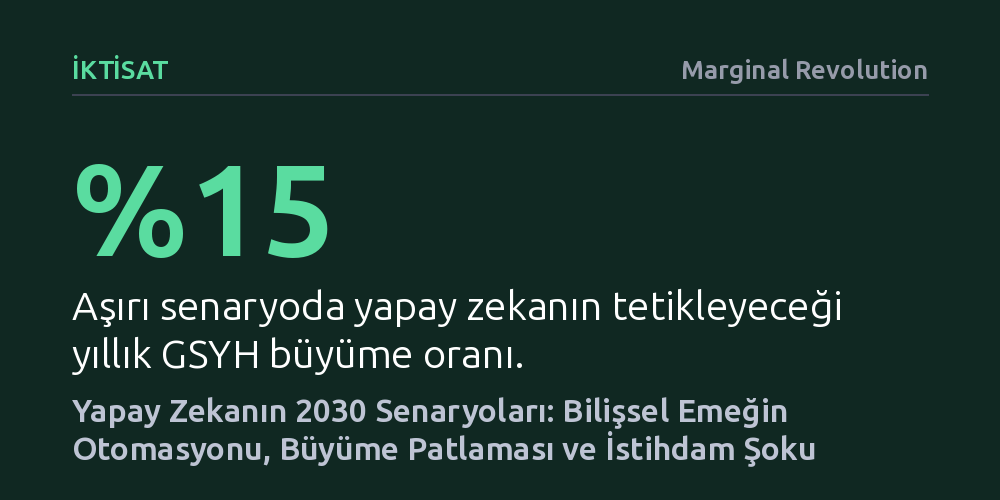

IKTISAT · Marginal Revolution · 2026-09-11
Yeni bir makroekonomik model, yapay zekanın 2030'a kadar yıllık büyümeyi yüzde 15'e çıkarabileceğini, ancak bilişsel iş gücünde beşte bire varan işsizlik yaratabileceğini gösteriyor. ABD kamuoyu beklentileri ise büyümenin yüzde 8 arttığı orta senaryoya yakın duruyor.
Yapay zekanın geleceğini soyut kehanetler yerine bilişsel emeğin otomasyon hızına bağlı somut makroekonomik senaryolar üzerinden değerlendirmeyi sağlıyor.

Yapay zekanın üretkenliği artıracağı genel bir kabul görse de, bu etkinin makroekonomik büyüklüğü ve zamanlaması üzerine tartışmalar çoğunlukla spekülatif kalıyor. Yeni yayımlanan araştırma, 2026 ile 2030 yılları arasındaki dönemi merkeze alarak yapay zekanın ekonomik sonuçlarını somut bir modelleme çerçevesine oturtuyor. Model, yapay zeka kabiliyetlerindeki ilerlemenin bilişsel işleri ne oranda ikame edeceğini inceliyor ve bu süreci GSYH büyümesi, işgücünün payı, reel ücretler ve istihdam hareketleriyle doğrudan ilişkilendiriyor.
Çalışmanın temel mantığı, bilişsel görevlerin artan bir hızla otomatikleşmesi üzerine kurulu. Rutin ya da karmaşık zihinsel işlerin yapay zekaya devredilmesi bir yandan genel verimliliği yukarı çekerken, diğer yandan yerinden edilen çalışanları başka meslek ve sektörlerde iş aramaya zorluyor. Araştırmacılar, bu dönüşümün etkilerini tek bir kestirim yerine üç farklı patika üzerinden —ılımlı, belirgin ve aşırı senaryolarla— kıyaslamalı olarak ortaya koyuyor.
Modele göre ilk patika olan ılımlı değişim senaryosunda, yapay zekanın ekonomik etkisi oldukça sınırlı kalıyor. Bu ihtimalde teknoloji, 2030 yılına kadar GSYH büyümesine yılda yarım puandan daha az katkı sağlarken, işsizlik oranını da yalnızca onda bir puan kadar yukarı itiyor. Yani ekonomi mevcut dinamiklerini büyük ölçüde koruyor ve sarsıcı bir yapısal kırılma yaşanmıyor.
Buna karşılık aşırı değişim senaryosu, radikal bir kopuşa işaret ediyor. Yapay zekanın 2030'a kadar bugünkü bilişsel emeğin yaklaşık yarısını tek başına üstlendiği bu tabloda, yıllık GSYH büyümesi yüzde 15 gibi tarihi bir seviyeye fırlıyor. Ne var ki bu devasa zenginleşme, eşi görülmemiş bir bölüşüm şokunu da beraberinde getiriyor: Emeğin toplam gelirden aldığı pay yüzde 60'tan yüzde 45'e düşerken, her beş bilişsel çalışandan yaklaşık biri işsiz kalıyor. Bu durum, büyüme patlamasının sermaye lehine muazzam bir gelir transferiyle gerçekleşeceğini gösteriyor.
Araştırmacılar yalnızca teorik simülasyonlarla yetinmeyip, ABD'deki yetişkinlerin yapay zekaya dair gelecek beklentilerini ölçen kapsamlı bir anket de gerçekleştirdi. Ankete katılanların görüşleri çok geniş bir yelpazeye dağılsa da, ortanca (medyan) katılımcının beklentileri araştırmacıların kurguladığı 'belirgin değişim' senaryosuyla birebir örtüşüyor.
Bu orta senaryoda, 2030 yılına gelindiğinde yapay zekanın sağladığı verimlilikle GSYH yüzde 8 oranında artarken, bilişsel istihdamda yüzde 4'lük bir gerileme öngörülüyor. Dolayısıyla toplumun genel hissiyatı, ne yapay zekanın önemsiz bir etki yaratacağını ne de sistemi aniden felce uğratacağını düşünüyor; aksine, gözle görülür bir büyüme artışı ile kontrollü bir istihdam kaybının dengelendiği bir geçiş sürecini muhtemel görüyor.
Bu modelin sunduğu en kritik ders, yapay zekanın tek başına 'iyi' ya da 'kötü' bir sonuç üretmediği, asıl meselenin teknolojinin yayılma hızı ve kurumsal uyum kapasitesi olduğudur. Bilişsel emeği hızla ikame eden bir teknoloji, eğer yerinden edilen insan kaynağının diğer alanlara hızla entegre olmasını sağlayacak esnekliği bulamazsa, yüksek büyüme rakamları derin bir toplumsal huzursuzlukla kol kola yürüyebilir.
Yazıyı değerlendiren iktisatçı Tyler Cowen da gelişmeleri ılımlı senaryonun biraz üzerinde bir yerde konumlandırarak, aşırı uçlardaki ütopik veya distopik öngörüler yerine kademeli fakat hissedilir bir dönüşüme işaret ediyor. Model, önümüzdeki dört yıl boyunca karar vericilerin sadece üretkenlik göstergelerine değil, işgücünün sektörel yeniden dağılımına ve bölüşüm dinamiklerine de odaklanması gerektiğini net bir şekilde ortaya koyuyor.